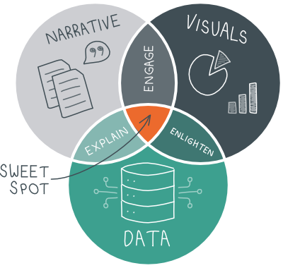

Variáveis nas colunas
Observações nas linhas
Valores nas celulas
dados %>%
filter(...) %>% # Ex.: Filtrar apenas funcionários do setor A
select(...) %>% # Ex.: Selecionar variável nome e salário
mutate(...) %>% # Ex.: Criar salário com reajuste
summarise(...) # Ex.: Calcular a média salarial daquele setor



R é a linguagem de programação utilizada para realizar as computações.

O RStudio é dividido em 4 sub janelas:
Você pode usar o R como uma calculadora:
(59 + 73 + 2) / 3## [1] 44.666671 / 200 * 30## [1] 0.15Pode criar novos objetos com <-:
# Olhe pra janela `Environment` depois de executar:
x <- 3 * 4Toda criação de objeto segue a mesma forma:
# nome_objeto assume o valor específico.
nome_objeto <- valorPara inspecionar o objeto, execute seu nome precisamente
x## [1] 12Nome de objetos precisam:
Começar com letras
Conter apenas letras, números, underline e ponto.
Existem várias convenções sobre a melhor forma de dar nome aos objetos.
Eles precisam ser descritivos.
Recomendo o sistema snake_case: palavras em minúsculo separados por _.
nome_da_variavel
dados_funcionario
pib_municipalFunções tomam argumentos e retornam um resultado:
nome_funcao(arg1 = valor1, arg2 = valor2, ...)Podemos usar seq() para criar uma sequência de números. Essa função precisa do valor inicial e final:
seq(1, 10)## [1] 1 2 3 4 5 6 7 8 9 10As funções podem ter argumentos padrão (default), como seq que determina o espaçamento entre números para 1. Podemos modificar isso se quisermos:
## [1] 1 3 5 7 9Ou podemos determinar o tamanho da sequência:
## [1] 1.00 3.25 5.50 7.75 10.00Mas como descobrir o nome desses argumentos?
?seq
# ou
help("seq")Alternativamente, você pode selecionar o nome da função e clicar F1 no RStudio.
É sempre uma boa ideia usar scripts. Nele você pode salvar seu código para reutilizar novamente
Clique em File, selecione New File, então R script.
Você pode rodar uma linha de código e executar com Ctrl + Enter.
Selecionando várias linhas é possível executar várias linhas de código de uma vez.
Salve o código com Ctrl + S para reutiliza-lo.
Dica: sempre comece o código carregando os pacotes (library) importantes: library(tidyverse).
Caso contrário, as funções não ficam a sua disposição.
Crie um projeto RStudio para cada projeto de análise de dados.
Assim, você mantem todos os arquivos associados a um projeto em um lugar só: dados, scripts, figuras, resultados.